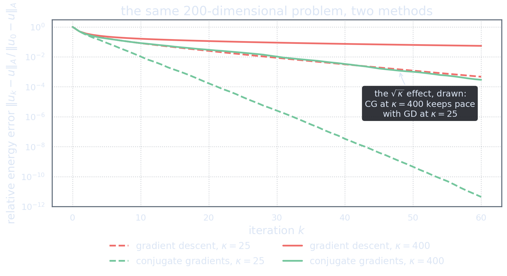

The Raw Material Problem
Act 4 needs conjugate directions; the black box vetoes every off-the-shelf source of them. So let us ask the question the right way around: what vectors does the iteration actually produce that we could build directions from?
Audit one step. It computes one operator application, \(Ap_k\), and from it the new residual \(r_{k+1}\). That is the complete list. The residual is the only genuinely new vector each step yields — and it is a magnificent candidate, for two independent reasons:
- Locally, it is the best direction there is — the steepest descent direction (Act 1). Using it honours the landscape’s advice.
- Globally, it always points into new territory. By the expanding-subspace theorem (Act 4), \(r_{k}\) is orthogonal to every direction searched so far. A residual is never a rehash of old work: it is either zero — and we are done — or it carries a component the method has never explored.
The plan is therefore irresistible: take the residual stream \(r_0, r_1, r_2, \dots\) as raw material, and enforce conjugacy by Gram–Schmidt in the \(A\)-inner product: set \(p_0 = r_0\) and \[p_k = r_k \;-\; \sum_{j<k} \frac{\ipA{r_k}{p_j}}{\ipA{p_j}{p_j}}\, p_j .\] As written, this looks like it inherits every disease of Act 4’s failed options: the sum grows with \(k\), and all old directions must be kept. The astonishment of this act is that the sum is an illusion. All but its last term are already zero.
This construction is not a modern retelling; it is how the inventors themselves characterized their method. Theorem 5:2 of Hestenes and Stiefel’s 1952 paper [HS52] reads: “The cg-method is a cd-method. It is the special case of the cd-method in which the \(p_i\) are obtained by \(A\)-orthogonalization of the residual vectors \(r_i\).” Everything below is the working out of that one sentence.
The House Everything Lives In
To see why, we need one bookkeeping observation. Watch which vectors the iteration can possibly construct. It starts from \(r_0\), and its only vector-producing operations are applying \(A\) and taking linear combinations. After \(k\) steps, everything the method has ever touched therefore lies inside the Krylov subspace \[\Kry_k := \spanop\{r_0,\; Ar_0,\; A^2r_0,\; \dots,\; A^{k-1}r_0\}\] (named for Aleksei N. Krylov, who used such spaces in 1931 to compute characteristic polynomials — for the lineage see the history in [GO89], and for the modern framework Saad [Saa03], Ch. 6). More precisely, a two-line induction on the update formulas gives \[u_k \in u_0 + \Kry_k, \qquad r_k \in \Kry_{k+1}, \qquad p_k \in \Kry_{k+1},\] and (as long as the method has not yet converged) the directions built so far fill the space exactly: \[\spanop\{p_0,\dots,p_{k-1}\} \;=\; \spanop\{r_0,\dots,r_{k-1}\} \;=\; \Kry_k.\]
Combine this with the expanding-subspace theorem, which says \(r_k\) is orthogonal to all searched directions, and we get the single most useful fact of the act: \[\boxed{\;r_k \perp \Kry_k\;}\] — the current residual is orthogonal to the entire Krylov subspace built so far, not merely to a few chosen vectors. (In particular \(\ip{r_k}{r_j}=0\) for all \(j<k\): the residuals form an orthogonal family. File that away; it is about to earn its keep twice.)
The Krylov subspace is the sum total of what the black box has revealed about the problem after \(k\) probes. Saying \(r_k \perp \Kry_k\) is saying: the direction of remaining error is orthogonal to everything we know. An iteration cannot be less wasteful than that.
The Miracle of the Short Recurrence
Return to the Gram–Schmidt sum and inspect the coefficient of an old direction \(p_j\), \(j \le k-2\): \[\ipA{r_k}{p_j} = \ip{r_k}{Ap_j}.\] Where does \(Ap_j\) live? Since \(p_j \in \Kry_{j+1}\), applying \(A\) once gives \[Ap_j \in \Kry_{j+2} \subseteq \Kry_k \qquad\text{(using } j \le k-2\text{)}.\] But \(r_k \perp \Kry_k\). Therefore \[\ipA{r_k}{p_j} = 0 \qquad\text{for every } j \le k-2.\]
Every term of the Gram–Schmidt sum vanishes except the most recent one. Not approximately, not by clever choice — by the structure of what the iteration is able to know. The infinite recipe collapses to \[p_k = r_k + \beta_{k-1}\, p_{k-1}, \qquad \beta_{k-1} = -\frac{\ip{r_k}{Ap_{k-1}}}{\ip{Ap_{k-1}}{p_{k-1}}}.\]
The method does not need to remember its history, because the history is encoded in the orthogonality. \(r_k\) arrives already \(A\)-orthogonal to all directions but the last; one correction term finishes the job. This is the entire secret of CG: a memory implemented by geometry instead of by storage.
Polishing the formulas
What remains is bookkeeping — two classical simplifications that cost nothing and are used by every implementation on earth. Both are one-liners given the residual orthogonality we banked above.
First: the step length. Act 4’s formula uses \(\ip{r_k}{p_k}\). Substitute \(p_k = r_k + \beta_{k-1}p_{k-1}\) and use \(\ip{r_k}{p_{k-1}}=0\) (line-search stopping condition): \[\ip{r_k}{p_k} = \ip{r_k}{r_k} \qquad\Longrightarrow\qquad \alpha_k = \frac{\ip{r_k}{r_k}}{\ip{Ap_k}{p_k}}.\]
Second: the conjugation factor. The residual update gives \(Ap_{k-1} = (r_{k-1} - r_k)/\alpha_{k-1}\). Take its inner product with \(r_k\), using \(\ip{r_k}{r_{k-1}} = 0\): \[\ip{r_k}{Ap_{k-1}} = -\frac{\ip{r_k}{r_k}}{\alpha_{k-1}}, \qquad \ip{Ap_{k-1}}{p_{k-1}} = \frac{\ip{r_{k-1}}{r_{k-1}}}{\alpha_{k-1}},\] (the second equality is just the \(\alpha_{k-1}\) formula rearranged), so the quotient collapses to \[\beta_{k-1} = \frac{\ip{r_k}{r_k}}{\ip{r_{k-1}}{r_{k-1}}}.\] No application of \(A\) is spent on \(\beta\) at all: it is the ratio of two numbers the iteration computes anyway.
The Algorithm, Assembled
Choose \(u_0\in\H\); compute \(r_0 = f - Au_0\); set \(p_0 = r_0\). For \(k = 0, 1, 2, \dots\): \begin{align*} q_k &= A p_k && \text{one black-box application}\\[2pt] \alpha_k &= \frac{\ip{r_k}{r_k}}{\ip{q_k}{p_k}} && \text{exact line search}\\[2pt] u_{k+1} &= u_k + \alpha_k p_k && \text{step}\\[2pt] r_{k+1} &= r_k - \alpha_k q_k && \text{residual, for free}\\[2pt] \beta_k &= \frac{\ip{r_{k+1}}{r_{k+1}}}{\ip{r_k}{r_k}} && \text{conjugation factor}\\[2pt] p_{k+1} &= r_{k+1} + \beta_k p_k && \text{next direction} \end{align*} Stop when \(\norm{r_{k+1}}\) is below tolerance.
(These are, up to notation, formulas (3:1)–(3:2) of the original paper [HS52] — seventy years on, nothing has changed.)
Take a moment to appreciate the ledger. Per iteration: one application of \(A\), two inner products, three vector updates. Memory: four vectors (\(u\), \(r\), \(p\), \(q\)) — regardless of dimension, including infinite. The method carries the entire optimality of conjugate directions (permanent progress, expanding subspaces, \(n\)-step termination in \(n\) dimensions) at essentially the price of steepest descent.
Scan the algorithm box once more: there is no basis, no matrix entry, no coordinate, no mesh. Every operation is an inner product, a scaled addition, or a call to the black box. The method as derived lives natively in the Hilbert space \(\H\) — \(\mathbb R^n\) is merely a special case. What discretization does to this picture (and what it cannot do) is Act 6’s closing theme.
The Race
Theory delivered; now the spectacle. Same landscape, same starting point, same cost per step — one exact line search each. The only difference: gradient descent recycles the residual as its direction; CG spends one extra axpy to conjugate it first.
Of course, in two dimensions CG’s victory is guaranteed by Act 4’s termination theorem — two steps, always. The fair fight happens in high dimension, where both methods run far fewer steps than \(n\) and quality of direction is everything:

CG = conjugate directions + residuals as raw material. Krylov structure makes the Gram–Schmidt sum collapse to one term; orthogonality lemmas polish \(\alpha\) and \(\beta\) into ratios of numbers already computed. One \(A\)-application, four vectors, per step.
One question remains, and it elevates the method from excellent to canonical. We chose residuals as raw material because they were available. Could a cleverer choice — any choice — do better? Act 6 proves the answer is no: among all methods that consume the same black-box information, CG is optimal, every step, in the energy norm. And the same lens will finally explain the \(\sqrt{\kappa}\) in its celebrated convergence bound, what a clustered spectrum buys, and what remains true when \(\H\) is infinite-dimensional.
References
- Magnus R. Hestenes and Eduard Stiefel (1952). “Methods of Conjugate Gradients for Solving Linear Systems.” Journal of Research of the National Bureau of Standards 49(6), 409–436. The algorithm: §3, formulas (3:1)–(3:2); CG as \(A\)-orthogonalized residuals: Theorem 5:2. doi:10.6028/jres.049.044 · free PDF (NIST)
- Yousef Saad (2003). Iterative Methods for Sparse Linear Systems, 2nd edition. SIAM. Krylov subspace methods: Ch. 6 (CG: §6.7). doi:10.1137/1.9780898718003 · free PDF (author’s edition)
- Gene H. Golub and Dianne P. O’Leary (1989). “Some History of the Conjugate Gradient and Lanczos Algorithms: 1948–1976.” SIAM Review 31(1), 50–102. doi:10.1137/1031003 · author’s reprint PDF
- Jonathan R. Shewchuk (1994). “An Introduction to the Conjugate Gradient Method Without the Agonizing Pain.” Carnegie Mellon University. free PDF (CMU)